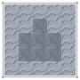
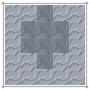
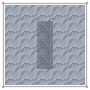
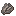

1.20.1 / (Addon) Firmalife / オーブン
オーブン
オーブンは、食品の保存性を高めるための調理に最適です。オーブンで焼いた食品は通常の90％の割合で腐敗が進行します。オーブンは、オーブンかまど、オーブン、オプションで煙突からなるマルチブロックです。これらのブロックは粘土の状態で設置し、一定の温度まで十分に温度を上げ、硬化させる必要があります。オーブン機器はオーブンの機能を拡張します。

オーブンのレシピ

オーブンかまどのレシピ

オーブンの煙突のレシピ



2
オーブンは、レンガや他のオーブンブロックなど、炉を断熱できるものなら何を使っても断熱できます。
つまり、様々な石のブロックが使えます！


ピールはオーブンから熱いものを取り出す安全な方法です。
(ピール持ちRight Clickを押せばアイテムを取り出せます。そうでなければ、やけどをする恐れがあります！)
オーブンは、まずオーブンかまどの上にオーブンブロックを置きます。その後、各オーブン部品の前面以外すべての側面を、2ページ前で説明したような断熱ブロックで覆います。
オーブンの煙突は断熱材としても使えます。
オーブンの真後ろに煙突を設置することで、オーブンの煙が上昇し排出されます。そうしないと、すぐに煙が家中に充満してしまい、非常に気が散ってしまいます！
Multiblock
オーブン構造の例、未硬化と硬化。
オーブンかまどには燃料を入れます。
Right Clickを押すことで、燃料を出し入れできます。
オーブンかまどは、火おこし器などで点火する部分です。
オーブンかまど内の熱をオーブンに伝えます。
オーブンには調理したいアイテムが入ります。
オーブンはオーブンかまどから熱を受け取り、時間をかけてゆっくりと放出します。
つまり、燃料がなくなっても、オーブンは少しの間働き続けます。
オーブンに調理したいアイテムを追加するには、Right Clickを押すだけです。
アイテムを入れたら、ピールを使って取り出すのを忘れずに。
オーブンブロックの硬化は簡単ですが、強度が必要です。
通常通りにオーブンかまどを稼働させ、待つだけです。
オーブンブロックが約80秒間600度以上になると、それ自体が硬化し、周りのオーブンブロックも硬化します。
硬化は、近くの煙突の上まで伝わります。


オーブンかまど用の断熱材を作ることで、側面と背面を断熱する必要がなくなります。
煙突の必要性がなくなるわけではありません。
適用するにはRight Clickを使用します。
カウンタートップは、オーブンの断熱材としてカウントされる装飾ブロックであり、オーブンブロックと同じ外観を持ちます。
キッチンの見た目を損ないません。
オーブンには、外観を変えるための上塗りもあります。
これらの上塗りは、オーブンの基本的なレンガの段階（またはレンガのブロックそのもの）に施されるもので、装飾品です。
上塗りは組み合わせが可能です。Right Clickで行います。
Recipe: firmalife:crafting/rustic_finish
16

16